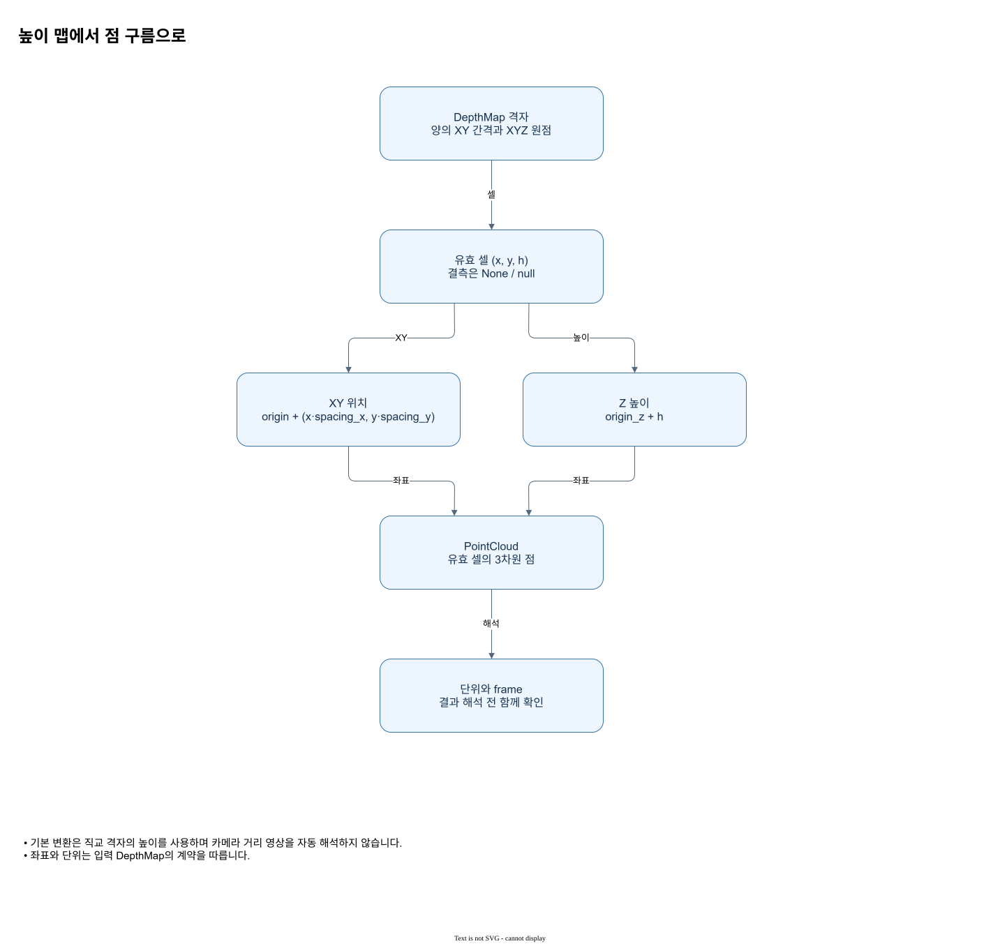

높이 맵에서 점 구름으로
격자 셀과 높이를 원점 및 간격으로 3차원 점에 대응합니다.


그림을 읽는 순서
- 기본 변환은 직교 격자의 높이를 사용하며 카메라 거리 영상을 자동 해석하지 않습니다.
- 좌표와 단위는 입력 DepthMap의 계약을 따릅니다.
입력과 결과의 의미
직교 격자의 셀 (x,y)에 값 h가 있으면 점은 (origin.x + x·spacing_x, origin.y + y·spacing_y, origin.z + h)입니다. 좌표와 h는 지정한 길이 단위를 사용하고 frame은 좌표계 식별자입니다. None 은 결측이며 수치 0과 다릅니다. 각 슬롯의 순서를 유지하여 점군으로 변환합니다.
격자·좌표·결측 계약 · Rust · Spatial3D에서 설정과 실제 API를 이어서 확인할 수 있습니다.
2×2 격자에서 ROI 원점 x=12, 첫 점 결측, 둘째 점 z=34를 기대합니다.
Rust 합성 ROI 예제 · Rust · Spatial3D에서 설정과 실제 API를 이어서 확인할 수 있습니다.
적용할 때 확인할 점
격자 셀과 높이를 원점 및 간격으로 3차원 점에 대응합니다. 그림의 화살표는 여기에서 설명하는 데이터 또는 제어 관계를 나타냅니다. 실제 호출에서 사용할 수 있는 입력 형식과 반환 객체는 연결된 API 문서의 선언과 파라미터 표를 확인하세요.